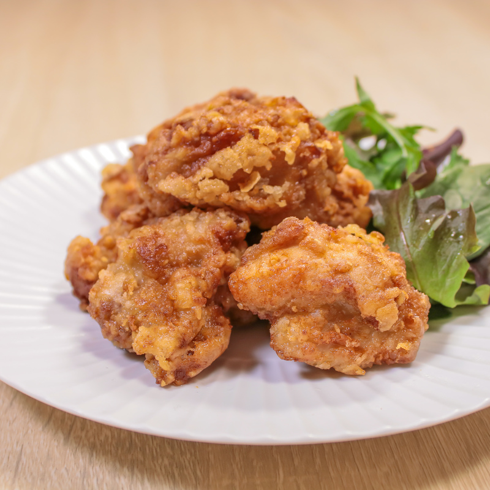

Tori no Karaage

Description
Ingredients
- 200g - Chicken Thigh Meat
- 1 teaspoon - Minced Garlic
- 1 teaspoon - Minced Shouga
- 1 pinch - Salt and Pepper
- 1 tablespoon - Soysauce
- 1 tablespoon - Sake
- 2 tablespoons - Mayonnaise
- 30g - Potato Starch
- 20g - Flour
- as needed - Vegetable Oil
-
Cut 200g of chicken thigh meat to bite sized pieces.
To ensure even cooking, cut into even sized pieces.
-
Add chicken and marinade into a zippable bag.
-
When mixed thoroughly, add in 2 tablespoons of mayonnaise.
The mayonnaise will make your chicken more flavorful and juicy!
Frying the chicken will make the mayo flavor disappear
so it's great to put in even if you don't like mayonnaise!
- Let sit for 15~30 minutes.
-
Prepare the coating.
To make a crunchy exterior, we mix potato starch with flour.
Add slightly more potato starch than flour.
30g potato starch
20g flour
-
Take out the marinated chicken and cover with coating with chopsticks.
Putting too much coating will make the texture worse.
Coat by rolling the meat over the flour.
- Heat vegetable oil in a pot to 170C, then fry chicken until slightly brown.
- Rest for 3 minutes, then fry at 190C until golden brown
Enjoy!